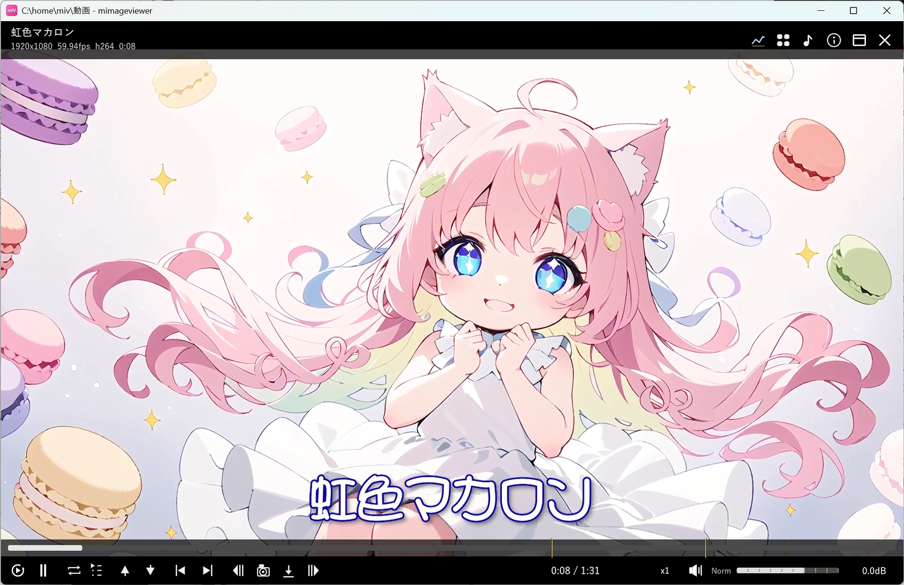
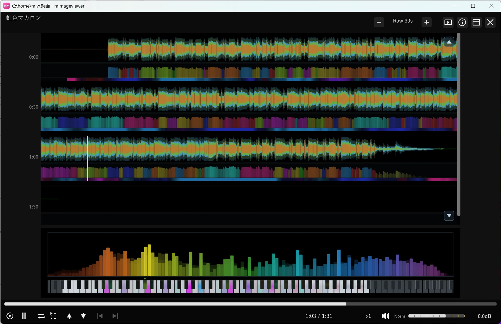

動画をインライン再生する
フォルダの中に動画ファイルがあれば、画像を見るのと同じ感覚でそのままフルスクリーン再生できます。 シーク・倍速・ループといった基本操作に加えて、映像を止めて音だけを聴く「音声モード」も用意されています。 ここではローカルに保存済みの動画ファイルを開いてからの基本的な使い方を紹介します。
動画ファイルを開く
フォルダ一覧に並んでいる動画ファイルをダブルクリック（または Enter）すると、 フルスクリーンで自動的に再生が始まります。前回途中まで見ていた動画は、続きの位置から再開されます。

基本の再生操作
| キー | 動作 |
|---|---|
| Space / Enter / 画面クリック | 再生 / 一時停止をトグル |
| ← / → | 5 秒シーク（前 / 次） |
| Shift+← / → | 1 秒シーク（細かい） |
| Ctrl+← / → | 30 秒シーク（大きい） |
| ↑ / ↓ / マウスホイール | 前 / 次のファイルへ移動 |
下部 HUD のシークバーはホバーするとその位置のサムネイル プレビューが表示されるので、 目的の場面を探しながら頭出しできます。再生中はしばらく操作がないと HUD が自動的に隠れ、 マウスを動かすかキーを押すと再表示されます。 プレビューを早く表示したいときは、環境設定の「シーク時のズレ許容 (秒)」を大きくします。 値は大きめで構いません。迷ったら大きめにしてください。
音量と Norm（音量自動調整）
音量は下部 HUD 右側のスライダーで調整します（ダブルクリックで 0dB＝100% に戻ります）。 音量は 100% を超えて上げられ、上げすぎたときの音割れを防ぐために、ピークを超えそうになると 自動で音量を抑える保護がはたらきます。このとき音量表示の右に 赤い ● のインジケータが一瞬点灯します。 赤が頻繁に出るときは、そのぶん音質が下がりやすいので、音量を少し下げるときれいに聞こえます。
音量スライダーの左にある 「Norm」ボタンは、音量自動調整です。動画ごとに録音レベルが バラバラでも、聞こえの大きさをおおよそそろえて再生します。ボタンを押すと ON / OFF が切り替わり、ON にすると音量を 測ってから、静かすぎる動画・大きすぎる動画を近い音量にならしてくれます。何本も続けて流すときに、音量を毎回いじらずに済みます。
倍速再生・ループ・連続再生
下部 HUD の速度ボタンから 0.5x〜3.0x の 11 段階で再生速度を切り替えられます。 音声は音の高さ（ピッチ）を保ったまま再生速度だけが上がるので、声が甲高くならず、自然な声質のまま早見できます（話すテンポ自体は速くなります）。 速度ボタンをダブルクリックすると、通常速度（1.0x）にすぐ戻せます。
ループは下部 HUD のループボタンで切り替えます（L キーでも切り替えられます）。 ループなし → 全体ループ → チャプターループ → ブックマークループの順に変わり、 チャプターやブックマークが無い動画では該当する段階を自動でスキップします。 ループはいずれも 同じ 1 本の動画を繰り返すための設定です。
再生し終わった動画から 次のファイルへ自動で進みたい ときは、下部 HUD の 連続ボタン を使います。押すたびに次の 3 段階を切り替えます。
| 連続再生 | 動画を再生し終えたとき |
|---|---|
| OFF | その場で停止します（次には進みません） |
| 連続再生 | フォルダ内の次のファイルへ自動で進みます。最後まで来たら停止します |
| 連続再生 + ループ | 次のファイルへ進み、最後まで来たら先頭のファイルへ戻って繰り返します |
映像を止めて音声だけで聴く（音声モード）
動画を再生しているときに上部バーの ♪ ボタン、または Z キーを押すと、 映像を止めて音だけを聴く「音声モード」に切り替わります。作業用 BGM として動画の音声だけを 流したいときや、波形・スペクトラムで音を確認したいときに便利です。
- 音は途切れず、再生位置・音量・音量自動調整の状態はそのまま引き継がれます
- 上部バーの ▶ ボタン、または再度 Z キーで映像表示に戻ります
- 音声モードのまま前 / 次のファイルへ移動でき、連続再生中もそのまま音声モードを保ちます
